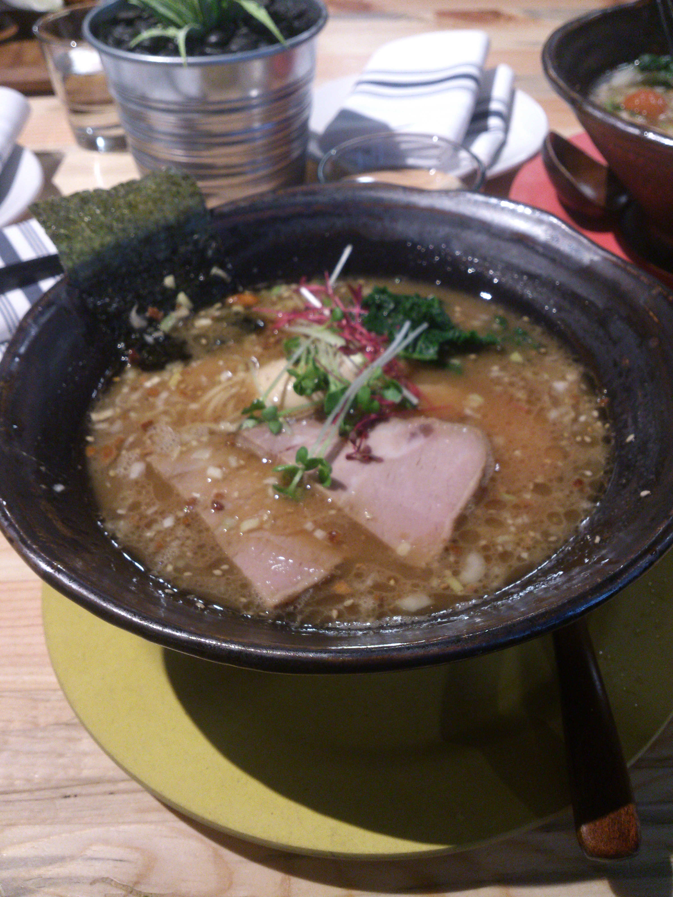
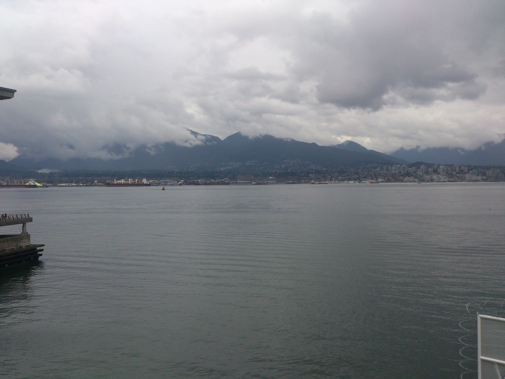

I'm writing this post pretty late and we have an early morning tomorrow so I'm going to keep this post relatively short. It was a very eventful day today so that might be kind of tough.
Our day was filled with adventure and great food. We left around noon for Downtown Vancouver, taking the Sky Train. It stopped inside the shopping mall there so we took some time to check out the stores there. Afterwards, we had lunch at a ramen place called Gyoza Bar. It was actually really tasty and definitely a pretty cool restaurant to eat at. I had the Tamari-Shoyu Tonkotsu Pork Ramen! The presentation of the place was quite impressive; very clean and simple and the food came in a unique bowl (that did make it look like there was more than there actually was).

Our next stop was Stanley Park! Or was it... We had a really fun walk along the path lining the bay which had a beautiful view of cloudy North Vancouver. There were a lot of nice cars along the way since there was going to be a car show the next day, and Nemo did his usual gawking of cars saying that the only thing he didn't like about his car is that fact that it's not his. I saw Aston Martin GT somethings and Lambos and other cars but obviously I'm not the biggest car fanatic. Halfway along our walk to Stanley Park, we looked back and noticed the ominous clouds in the distance. It was definitely going to rain in a bit. The original plan was to bike around Stanley Park but unfortunately it started drizzling and then it just poured. It then started hailing and that was the end of our outdoor adventure. We ran back to the train station occasionally stopping under protected areas to rest from the wrath of the rain. It got so cold that it was hailing so it did sting to run through the rain.

It's getting pretty late so I'm going to end the post there. It was still a lot of fun exploring downtown and hanging out with Nemo and Lewis. Tomorrow we're checking out the mountains up north (I don't remember what they're called) so look for some good pictures tomorrow!